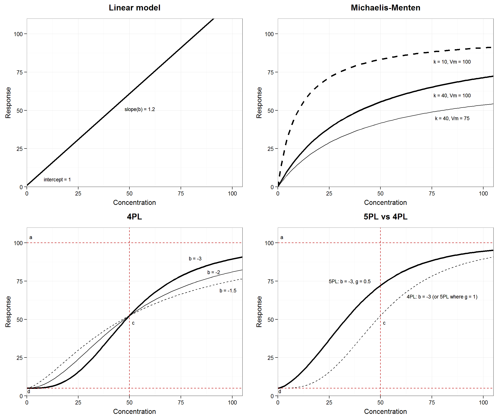
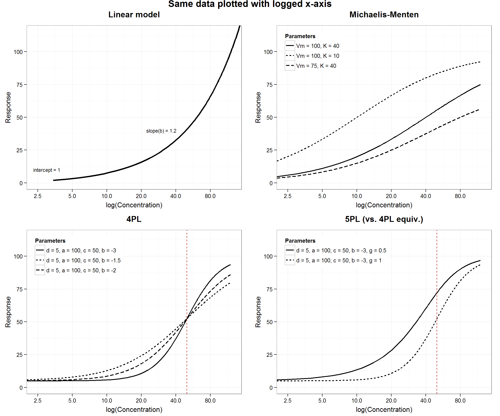

in development
The most commonly recommended method for calibration is least squares (non-)linear regression using a data set consisting of calibrators of known concentration (x) and their signal readings (y). The unknown sample concentrations are then calculated from the inverse of the estimated function. This is sometimes called inverse regression, but note that the inverse function is not being directly estimated from the data.
Common calibration curve models. See below for parameter definitions:
| Name | Function | Inverse |
|---|---|---|
| Linear | \(y = int + b * x\) | \(x = \frac{y-int}{b}\) |
| Michaelis-Menten | \(y = \frac{Vm*x}{k+x}\) | \(x = \frac{k*y}{Vm-y}\) |
| 4P Logistic | \(y = d + \frac{a-d}{1 + (\frac{x}{c})^b}\) | \(x = c \Big(\frac{a-d}{y-d} -1 \Big)^{1/b}\) |
| 5P Logistic | \(y = d + \frac{(a-d)}{\Big(1 + (\frac{x}{c})^b\Big)^g}\) | \(x = c \Big((\frac{a-d}{y-d})^{1/g} -1 \Big)^{1/b}\) |
Note: In our R scripts, we will use more descriptive labels for the parameters of the logistic models than used by Dunn and Wild or Findlay. These will serve as a memory aid, but also single letter labels are at high risk of being confused with or replaced by another R object since very short names are popular for intermediate steps.
\(b\) (beta or hill): Rate of change, slope, “slope factor” or “Hill slope”. In the case of linear regression, the units of \(b\) are x-units per y-unit. In logistic functions, \(b\) is unit-less.
\(Vm\): On the scale of \(y\). Traditional notation for upper asymptote (as \(x\) goes to infinity) in Michael-Menten models. Analogous to \(a\) in the logistic models.
\(k\): on the scale of \(x\). [No intuitive meaning], it affects the rate of approach to \(Vm\).
\(c\) (inflec): On the scale of \(x\); scales \(x\). In many applications it has a meaningful value: 50% effective dose (ED50) or inhibitory concentration (IC50) is used as an important benchmark in whole-cell assays or inhibitory drug studies, respectively. Since ED/IC50 is not meaningful in our domain, we will focus on the graphical meaning of \(c\) as inflection point in logistic models.
\(a\) (inf.x.asymp): On the scale of y; horizontal asymptote as \(x\) goes to infinity.
\(d\) (small.x.asymp): On the scale of y; horizontal asymptote as \(x\) goes, in theory, to negative infinity, but, in practice, to zero.
Note that here and in texts such as Dunn and Wild (2013), \(a\) is the asymptote as x goes to infinity regardless of curve direction (increasing or decreasing). The sign of \(b\) controls curve direction. Occasionally authors reverse the position of \(a\) and \(d\) to describe an increasing versus decreasing curve and keep the sign of \(b\) constant. In addition to any theoretical motivation, we find the former choice practical since \(d\) approximates the y-intercept of other models or plotted data.
g.5pl): no units. Similar properties to \(b\), it further alters the rate of change, [specifically the section of the curve between \(c\) and \(a\).]Four (and fewer) parameter logistic models are symmetric around the inflection point, \(c\), on the log(x) scale. The 5PL model is used to fit asymmetric sigmoidal curves (using log(x)) allowing a sharper transition toward one asymptote than the other.
Figures x–x show how the parameter values change curve shape in the four major model types. Familiarity with the parameters will help with model checking and choosing starting, or initial, values in non-linear regression (explained in more detail later).
# require(knitr)
# Graphical preferences for this project
source("AMgraph.R")## Loading required package: ggplot2
## Loading required package: ggthemes
## Loading required package: gridExtra
## Loading required package: grid
## Loading required package: plotrix# --- Non-linear and inverse functions used in tutorials ----
# Actually included in source file "../../../../source/R/AMfunctions.R"
# if changes are made here, change in AMfunctions.R, too
# Every model has an intercept (a), and parameters that relate non-zero
# x-values to y; sometimes int is zero and drops out
# ex. linear model: int varies, y change by b*x
#-------------- Define models -----------------------------------
# Michaelis-Menten model
# int always 0, no slope param needed, shape controlled by form
# Use built-in SSmicmen (stats package): Vm*input/(K+input) or this
M.micmen <- function(x, offset, Vm, K){
f <- offset + Vm * x / (K + x)
return(f)
}
# 4PL model
M.4pl <- function(x, small.x.asymp, inf.x.asymp, inflec, hill){
f <- small.x.asymp + ((inf.x.asymp - small.x.asymp)/
(1 + (x / inflec)^hill))
return(f)
}
# 5PL model
M.5pl <- function(x, small.x.asymp, inf.x.asymp, c.5pl, hill, g.5pl){
f <- small.x.asymp + ((inf.x.asymp - small.x.asymp)/
(1 + (x / c.5pl)^hill)^g.5pl)
return(f)
}
# ----- Inverse functions -------------------------
Inv.lr <- function(y, int, beta){
f <- (y - int)/ beta
names(f) <- "x.hat"
return(f)
}
Inv.micmen <- function(y, offset, Vm, K){
f <- K * (y - offset) / (Vm - (y - offset))
names(f) <- "x.hat"
return(f)
}
Inv.4pl <- function(y, small.x.asymp, inf.x.asymp, inflec, hill){
f <- inflec * ((inf.x.asymp - small.x.asymp) /
(y - small.x.asymp) - 1)^(1 / hill)
names(f) <- "x.hat"
return(f)
}
Inv.5pl <- function(y, small.x.asymp, inf.x.asymp, c.5pl, hill, g.5pl){
f <- c.5pl * (((inf.x.asymp - small.x.asymp) /
(y - small.x.asymp))^(1/g.5pl) - 1)^(1 / hill)
names(f) <- "x.hat"
return(f)
}
# Also defined in this source file which will be loaded for each tutorial
source("AMfunctions.R")
Plotted as log(concentration):

See figure 2 on page x. The lower part of the curve, below c is a function of b*g. In the upper portion, above the inflection point, the rate of approach to a is only a function of b.
| Model | b | g | b*g | Curve shape (lower portion) |
|---|---|---|---|---|
| I | -4.3 | 0.1 | -0.4 | Most convex |
| II | -2 | 0.3 | -0.6 | More convex |
| III | -3 | 0.3 | -0.9 | Nearly linear |
| IV | -4.3 | 0.3 | -1.3 | Slight concave up |
| V | -5 | 0.3 | -1.5 | More concave |
| VI | -4.3 | 0.5 | -2.2 | Most concave |
The reciprocal of the variance function is used to weight the data because… http://en.wikipedia.org/wiki/Variance_function#Application_.E2.80.93_weighted_least_squares [look into original source]
See also: http://www.ats.ucla.edu/stat/r/dae/rreg.htm
http://citeseerx.ist.psu.edu/viewdoc/download?doi=10.1.1.154.5344&rep=rep1&type=pdf
The reciprocal of the variance function is used to weight the data; that is, if
\[ Var(y) = a * Mean(y)^{theta} \]
then
\[ weight(obs) = standardized[1/EstimatedMean(y.group)^{theta}] \]
Weighted residuals…
Regression line confidence bands:
From investr plotFit Rdocs: “Confidence/prediction bands for nonlinear regression (i.e., objects of class nls) are based on a linear approximation as described in Bates & Watts (2007). This [function was inspired] by the plotfit function in the nlstools package.”
See Anderson-Sprecher_1994.pdf about R-squ
See the next set of tutorials, Concentration estimation and the precision profile.
Some of our favourite functions for calibration and non-linear regression are not part of the more familiar packages for linear regression (e.g. residual plots). Some of these functions{package} are:
nlsLM{minipack.lm}: We have opted to use the nlsLM function for non-linear regression instead of the core nls function for comparability with GraphPad. As explained here and here there are some advantages to using the Levenberg-Marquardt non-linear least-squares algorithm rather than [the other one]. The resulting R ‘objects’ can be used the same as regular nls objects.plotFit{investr}: Plots the estimated (non-)linear model with the original data, the fitted line and, if desired, the confidence and/or prediction bands.hatvalues or cooks.distance{drc}The drc, quantchem and other calibration curve fitting packages contain a lot of convenience functions, but we prefer to build up a set of functions based on basic functions for instructional purposes. Some of the curve-fitting packages incorporate a lot into one function, including various formal (null-hypothesis) tests for fit (model, parameters, etc). As explained above, we prefer to evaluate models in a more direct way because the null hypothesis tests can be difficult to interpret—they rarely directly address the question of interest. Also, presentation of results is very subjective so we hope the small functions built in these tutorials will help the user build functions that are customised to the needs of their lab and domain and avoid a lot of manual cut-and-paste or formatting (error prone).
Dunn, John R, and David Wild. 2013. “Calibration Curve Fitting.” In The Immunoassay Handbook, 4th ed., 323–37. Elsevier. doi:10.1016/B978-0-08-097037-0.00013-0.